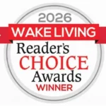
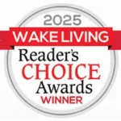
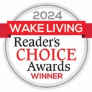
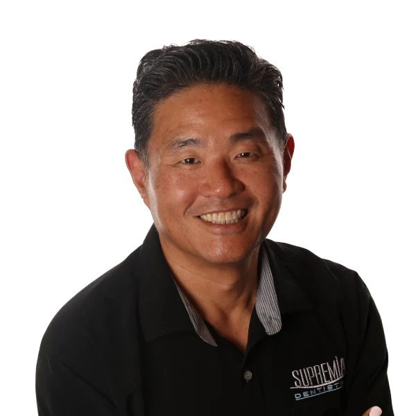
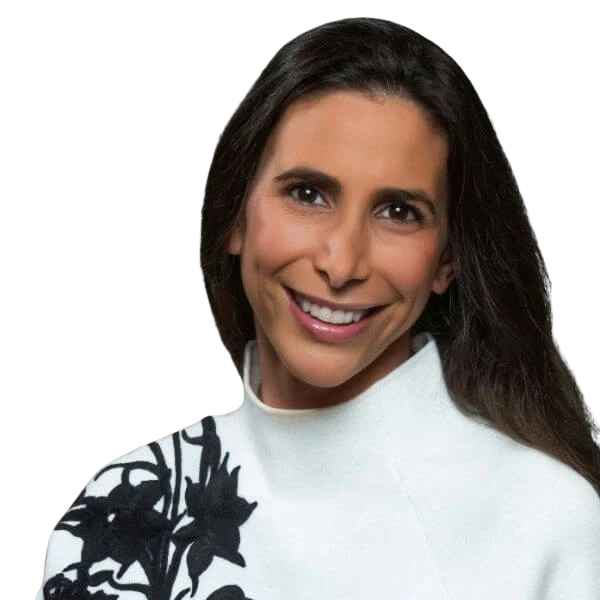

Wake Forest cosmetic and whole-health dentistry
Dentistry that sees the whole picture.
Supremia Dentistry brings cosmetic dentistry, TMJ and headache care,
airway-aware treatment, implants, Invisalign, sedation, and family care
into one calm Wake Forest dental home.
Recognized locally and seen nationally
Wake Living Readers' Choice, media mentions, and practice awards.



How we can help
Start with what brought you here.
The strongest path is not always a single treatment page. It may start with
a smile goal, jaw pain, sleep concern, missing tooth, anxious visit, or a
child who needs help growing and breathing well.
Featured
Cosmetic dentistry and no-prep veneers
For patients considering a brighter, more balanced, natural-looking smile
with whitening, veneers, Invisalign, or full smile planning.
View cosmetic options
Jaw pain, headaches, or bite tension
TMJ disorder care with a broader look at bite, muscles, sleep, and daily function.
Missing teeth or failing dental work
Implant and restorative planning for stable chewing, comfort, and smile confidence.
Sleep, airway, and whole-body clues
Airway-aware dentistry for people who want the mouth considered as part of the body.
Crowding, spacing, or alignment
Invisalign and physiologic orthodontic conversations for adults and growing patients.
Dental anxiety or bigger visits
Sedation options for people who need a more comfortable path back into care.
A different dental experience
Clinical depth, real hospitality, and a practice culture with a pulse.
The strongest dental brands do not just list services. They make the
practice's point of view easy to feel. Supremia already has that: advanced
clinical training, a technology-forward office, real community work, and
a team that talks about dentistry as something that can change daily life.
Comfort-focused visits
Advanced dental technology
Mission and community involvement
Meet the clinicians
Dentists with credentials patients can actually feel in the visit.

Founder, speaker, educator
Dr. Edmond Suh
Dr. Suh is an internationally recognized speaker, LVI faculty member,
and Wake Living Top Dentist honoree. His work connects cosmetic care,
TMJ treatment, contemporary dentistry, and a high standard for patient experience.
Meet Dr. Suh

Holistic and airway-focused dentistry
Dr. Morgan Herman
Dr. Morgan brings an airway, sleep, biologic, and whole-body lens to
treatment planning, especially for patients who want the cause explored,
not just the symptom repaired.
Meet Dr. Morgan
Smile transformations
A cosmetic page should prove taste, not just list treatments.
Supremia has a smile gallery and cosmetic authority. This homepage should
give visitors an immediate path to see real outcomes while keeping the
section tasteful and consent-aware.
View smile gallery
No-prep veneers
Natural-looking smile design
Invisalign + whitening
Phased cosmetic planning
Implants + restorations
Function and aesthetics together
Patient proof
People remember how the appointment felt.
"Everyone is very friendly and knowledgeable."
Stefanie B.
"Outstanding dental professionals and staff."
James E.
Read more patient stories
Bring reviews into the page as lived experience, not as a generic slider.
The goal is trust before the visitor ever calls.
Patient stories
Plan a visit
Wake Forest dental care for patients across the Triangle.
Supremia Dentistry is located next to The Factory in Wake Forest and serves
patients from Wake Forest, Raleigh, Youngsville, Rolesville, Durham, Chapel
Hill, and nearby communities.
Supremia Dentistry
1704 South Main Street, Suite 110
Wake Forest, NC 27587
- Hours
- Mon-Thu 7:00AM-3:00PM
- Appointment types
- New patient, cosmetic, TMJ, second opinion, emergency
Schedule appointment